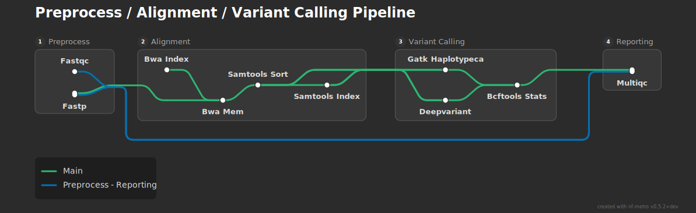
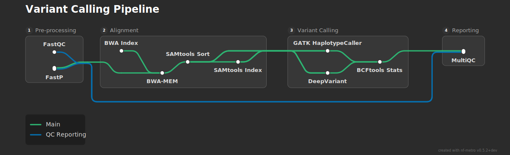

Importing from Nextflow¶
nf-metro can convert Nextflow's built-in DAG output into a metro map. This works best for simple pipelines with a handful of subworkflows. For complex pipelines like those in nf-core, direct conversion is unlikely to produce a good diagram -- you will need to hand-write or heavily edit the .mmd file. Improving this is an active area of development.
Generating a Nextflow DAG¶
Nextflow can export its pipeline DAG in mermaid format:
The -preview flag skips execution and just generates the DAG. The resulting file uses Nextflow's flowchart TB mermaid syntax, which nf-metro cannot render directly but can convert.
Direct rendering¶
The quickest way to get a metro map is to convert and render in one step with the --from-nextflow flag. The following examples show what you get straight out of the box.
Flat pipeline (no subworkflows)¶
A simple five-process pipeline with no subworkflows:
workflow {
reads_ch = Channel.of(["sample1", [file("reads/s1_1.fq.gz"), file("reads/s1_2.fq.gz")]])
reference_ch = Channel.of(file("genome.fa"))
FASTQC(reads_ch)
TRIM_READS(reads_ch)
ALIGN(TRIM_READS.out, reference_ch.collect())
SORT_BAM(ALIGN.out)
MULTIQC(FASTQC.out.zip.mix(SORT_BAM.out.map { it[1] }).collect())
}
nextflow run flat_pipeline.nf -preview -with-dag dag.mmd
nf-metro render dag.mmd -o pipeline.svg --from-nextflow

With no subworkflows everything lands in a single section. The converter assigns one "main" line following the longest path. This is about as clean as it gets.
Pipeline with subworkflows¶
A pipeline with three subworkflows (Preprocess, Alignment, Quantification) plus a standalone MultiQC process:
workflow PREPROCESS {
take: reads
main:
FASTQC(reads)
TRIMGALORE(reads)
emit:
reads = TRIMGALORE.out.reads
fastqc_zip = FASTQC.out.zip
trim_log = TRIMGALORE.out.log
}
workflow ALIGNMENT {
take: reads; genome; gtf
main:
STAR_GENOMEGENERATE(genome, gtf)
STAR_ALIGN(reads, STAR_GENOMEGENERATE.out.index.collect())
SAMTOOLS_SORT(STAR_ALIGN.out.bam)
SAMTOOLS_INDEX(SAMTOOLS_SORT.out.bam)
emit:
bam = SAMTOOLS_SORT.out.bam
star_log = STAR_ALIGN.out.log
}
workflow QUANTIFICATION {
take: bam; gtf
main:
SALMON_QUANT(bam, gtf)
emit:
results = SALMON_QUANT.out.results
}
workflow {
PREPROCESS(reads_ch)
ALIGNMENT(PREPROCESS.out.reads, genome_ch, gtf_ch)
QUANTIFICATION(ALIGNMENT.out.bam, gtf_ch)
MULTIQC(/* all logs */)
}
nextflow run with_subworkflows.nf -preview -with-dag dag.mmd
nf-metro render dag.mmd -o pipeline.svg --from-nextflow

The converter maps each subworkflow to a section and auto-creates a "Reporting" section for the standalone MultiQC. It detects bypass lines (edges skipping sections, like QC metrics going from Preprocess directly to Reporting) and spur lines (dead-end processes like Samtools Index).
Variant calling pipeline (diamond pattern)¶
A pipeline where two variant callers (GATK and DeepVariant) both receive input from the same alignment step and reconverge at BCFtools Stats:
workflow VARIANT_CALLING {
take: bam; bai; genome
main:
bam_bai = bam.join(bai)
GATK_HAPLOTYPECALLER(bam_bai, genome.collect())
DEEPVARIANT(bam_bai, genome.collect())
BCFTOOLS_STATS(GATK_HAPLOTYPECALLER.out.vcf.mix(DEEPVARIANT.out.vcf))
emit:
stats = BCFTOOLS_STATS.out.stats
}
workflow {
PREPROCESS(reads_ch)
ALIGNMENT(PREPROCESS.out.reads, genome_ch)
VARIANT_CALLING(ALIGNMENT.out.bam, ALIGNMENT.out.bai, genome_ch)
MULTIQC(/* all logs */)
}
nextflow run variant_calling.nf -preview -with-dag dag.mmd
nf-metro render dag.mmd -o pipeline.svg --from-nextflow

The diamond fan-out/fan-in in the Variant Calling section renders cleanly.
Hand-tuning the output¶
For anything beyond a toy pipeline, the two-step workflow gives better results. Convert first, edit the .mmd, then render:
nf-metro convert dag.mmd -o pipeline.mmd --title "My Pipeline"
# edit pipeline.mmd
nf-metro render pipeline.mmd -o pipeline.svg
Here is what the converter produces for the variant calling pipeline:
%%metro title: Preprocess / Alignment / Variant Calling Pipeline
%%metro style: dark
%%metro line: main | Main | #2db572
%%metro line: preprocess_reporting | Preprocess - Reporting | #0570b0
graph LR
subgraph preprocess [Preprocess]
fastqc([Fastqc])
fastp([Fastp])
end
subgraph alignment [Alignment]
bwa_index([Bwa Index])
bwa_mem([Bwa Mem])
samtools_sort([Samtools Sort])
samtools_index([Samtools Index])
bwa_index -->|main| bwa_mem
bwa_mem -->|main| samtools_sort
samtools_sort -->|main| samtools_index
end
subgraph variant_calling [Variant Calling]
gatk_haplotypecaller([Gatk Haplotypeca])
deepvariant([Deepvariant])
bcftools_stats([Bcftools Stats])
gatk_haplotypecaller -->|main| bcftools_stats
deepvariant -->|main| bcftools_stats
end
subgraph reporting [Reporting]
multiqc([Multiqc])
end
%% Inter-section edges
bcftools_stats -->|main| multiqc
fastp -->|main| bwa_mem
samtools_sort -->|main| gatk_haplotypecaller
samtools_sort -->|main| deepvariant
samtools_index -->|main| gatk_haplotypecaller
samtools_index -->|main| deepvariant
fastqc -->|preprocess_reporting| multiqc
fastp -->|preprocess_reporting| multiqc
After editing -- cleaning up labels, renaming the bypass line, and adding a proper title -- the .mmd becomes:
%%metro title: Variant Calling Pipeline
%%metro style: dark
%%metro line: main | Main | #2db572
%%metro line: qc | QC Reporting | #0570b0
graph LR
subgraph preprocess [Pre-processing]
fastqc[FastQC]
fastp[FastP]
end
subgraph alignment [Alignment]
bwa_index[BWA Index]
bwa_mem[BWA-MEM]
samtools_sort[SAMtools Sort]
samtools_index[SAMtools Index]
bwa_index -->|main| bwa_mem
bwa_mem -->|main| samtools_sort
samtools_sort -->|main| samtools_index
end
subgraph variant_calling [Variant Calling]
gatk[GATK HaplotypeCaller]
deepvariant[DeepVariant]
bcftools[BCFtools Stats]
gatk -->|main| bcftools
deepvariant -->|main| bcftools
end
subgraph reporting [Reporting]
multiqc[MultiQC]
end
%% Inter-section edges
fastp -->|main| bwa_mem
samtools_sort -->|main| gatk
samtools_sort -->|main| deepvariant
samtools_index -->|main| gatk
samtools_index -->|main| deepvariant
bcftools -->|main| multiqc
fastqc -->|qc| multiqc
fastp -->|qc| multiqc

The changes are small but the diagram reads better: proper casing on labels (BWA-MEM, SAMtools, GATK HaplotypeCaller), a meaningful line name ("QC Reporting" instead of "Preprocess - Reporting"), and a cleaner title. See the Guide for the full .mmd format reference.
Adding file icons¶
One of the most useful features for Nextflow pipeline diagrams is marking input and output files with document icons. The %%metro file: directive pairs a station ID with a label, and when that station has a blank label ([ ]), it renders as a document icon instead of a pill-shaped station marker.
Starting from the hand-tuned variant calling example above, here is what changes:
-
Add
%%metro file:directives at the top of the file, one per file terminus: -
Add blank terminus stations (
[ ]) at the input and output points of your pipeline. The station ID must match the%%metro file:directive: -
Connect them to the pipeline with normal edges:
Here is the full .mmd with file icons added:
%%metro title: Variant Calling Pipeline
%%metro style: dark
%%metro file: fastq_in | FASTQ
%%metro file: ref_in | FASTA
%%metro file: vcf_out | VCF
%%metro file: report_out | HTML
%%metro line: main | Main | #2db572
%%metro line: qc | QC Reporting | #0570b0
graph LR
subgraph preprocess [Pre-processing]
fastq_in[ ]
fastqc[FastQC]
fastp[FastP]
fastq_in -->|main,qc| fastp
fastq_in -->|qc| fastqc
end
subgraph alignment [Alignment]
ref_in[ ]
bwa_index[BWA Index]
bwa_mem[BWA-MEM]
samtools_sort[SAMtools Sort]
samtools_index[SAMtools Index]
ref_in -->|main| bwa_index
bwa_index -->|main| bwa_mem
bwa_mem -->|main| samtools_sort
samtools_sort -->|main| samtools_index
end
subgraph variant_calling [Variant Calling]
gatk[GATK HaplotypeCaller]
deepvariant[DeepVariant]
bcftools[BCFtools Stats]
vcf_out[ ]
gatk -->|main| bcftools
deepvariant -->|main| bcftools
bcftools -->|main| vcf_out
end
subgraph reporting [Reporting]
multiqc[MultiQC]
report_out[ ]
multiqc -->|qc| report_out
end
%% Inter-section edges
fastp -->|main| bwa_mem
samtools_sort -->|main| gatk
samtools_sort -->|main| deepvariant
samtools_index -->|main| gatk
samtools_index -->|main| deepvariant
bcftools -->|qc| multiqc
fastqc -->|qc| multiqc
fastp -->|qc| multiqc

The FASTQ icon at the start of Pre-processing and the FASTA icon at the start of Alignment show where data enters the pipeline. The VCF icon at the end of Variant Calling and the HTML icon in Reporting show where results are written. This makes the diagram immediately readable to someone unfamiliar with the pipeline.
For a more complex example with multiple file icons, see the nf-core/rnaseq diagram at examples/rnaseq_sections.mmd, which uses FASTQ input icons and HTML report output icons across several sections.
How the converter works¶
Nextflow's -with-dag output contains three types of nodes: processes (the actual pipeline steps), channels/values (data plumbing), and operators (Nextflow internals like mix and collect). Here is the raw DAG for the flat pipeline example:
flowchart TB
subgraph " "
v0["Channel.of"]
v1["Channel.of"]
end
v2(["FASTQC"])
v4(["TRIM_READS"])
v6(["ALIGN"])
v7(["SORT_BAM"])
v11(["MULTIQC"])
v5(( ))
v8(( ))
v0 --> v2
v0 --> v4
v1 --> v5
v4 --> v6
v5 --> v6
v6 --> v7
v7 --> v8
v2 --> v8
v8 --> v11
The converter:
-
Drops non-process nodes -- channel nodes (
v0["Channel.of"]), value nodes (v1["Channel.of"]), and operator nodes (v5(( )),v8(( ))) are removed. Only stadium-shaped process nodes likev2(["FASTQC"])are kept. -
Reconnects edges -- edges that went through dropped nodes are stitched back together. For example,
SORT_BAM --> v8 --> MULTIQCbecomesSORT_BAM --> MULTIQC, andFASTQC --> v8 --> MULTIQCbecomesFASTQC --> MULTIQC. -
Maps subworkflows to sections -- Nextflow subworkflows become nf-metro
subgraphsections. Processes not in any subworkflow are grouped into auto-generated sections. -
Assigns metro lines -- the longest path gets the "main" line. Edges that skip sections get their own bypass lines. Dead-end processes get spur lines.
-
Cleans up labels --
SCREAMING_SNAKE_CASEbecomesTitle Case, and long names are abbreviated.
The result for this example:
%%metro title: Pipeline
%%metro style: dark
%%metro line: main | Main | #2db572
graph LR
subgraph pipeline [Pipeline]
fastqc([Fastqc])
trim_reads([Trim Reads])
align([Align])
sort_bam([Sort Bam])
multiqc([Multiqc])
fastqc -->|main| multiqc
trim_reads -->|main| align
align -->|main| sort_bam
sort_bam -->|main| multiqc
end